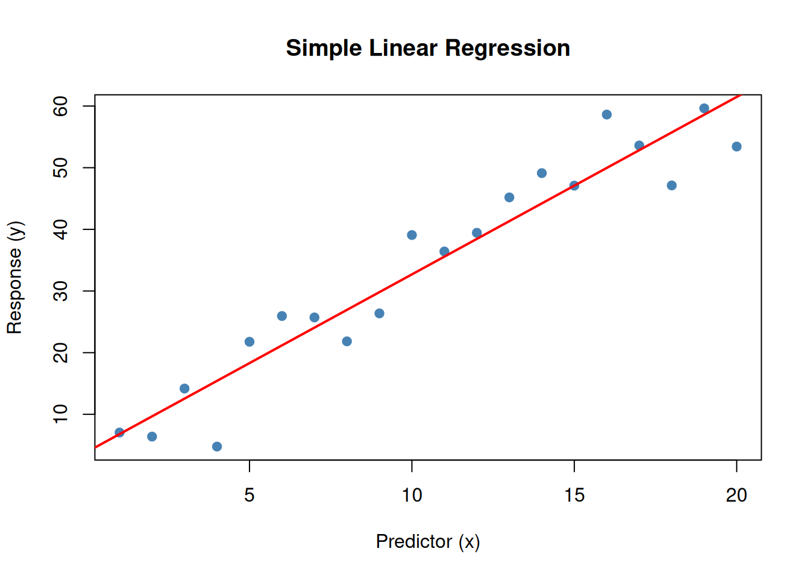
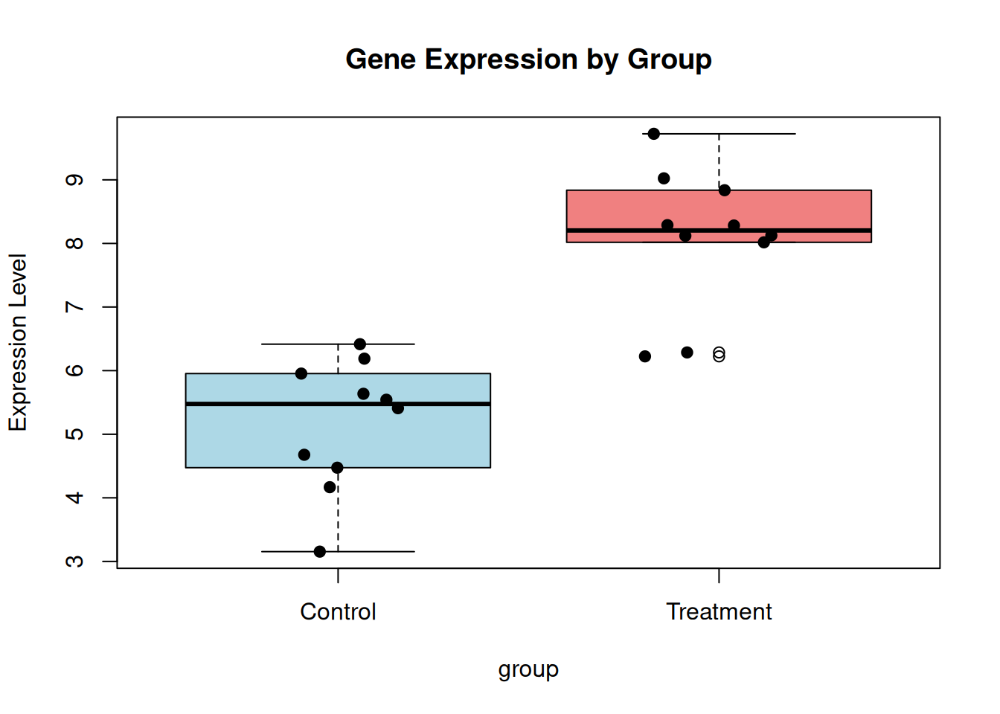
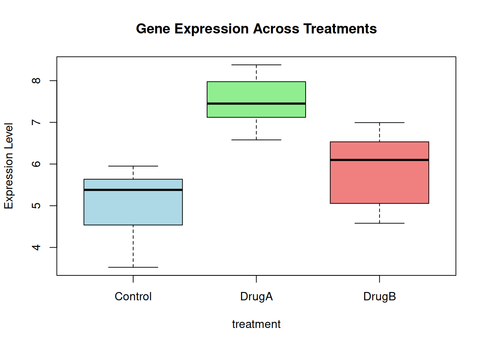

Last updated: 2026-01-28
Checks: 7 0
Knit directory: muse/
This reproducible R Markdown analysis was created with workflowr (version 1.7.1). The Checks tab describes the reproducibility checks that were applied when the results were created. The Past versions tab lists the development history.
Great! Since the R Markdown file has been committed to the Git repository, you know the exact version of the code that produced these results.
Great job! The global environment was empty. Objects defined in the global environment can affect the analysis in your R Markdown file in unknown ways. For reproduciblity it’s best to always run the code in an empty environment.
The command set.seed(20200712) was run prior to running
the code in the R Markdown file. Setting a seed ensures that any results
that rely on randomness, e.g. subsampling or permutations, are
reproducible.
Great job! Recording the operating system, R version, and package versions is critical for reproducibility.
Nice! There were no cached chunks for this analysis, so you can be confident that you successfully produced the results during this run.
Great job! Using relative paths to the files within your workflowr project makes it easier to run your code on other machines.
Great! You are using Git for version control. Tracking code development and connecting the code version to the results is critical for reproducibility.
The results in this page were generated with repository version 1e1a825. See the Past versions tab to see a history of the changes made to the R Markdown and HTML files.
Note that you need to be careful to ensure that all relevant files for
the analysis have been committed to Git prior to generating the results
(you can use wflow_publish or
wflow_git_commit). workflowr only checks the R Markdown
file, but you know if there are other scripts or data files that it
depends on. Below is the status of the Git repository when the results
were generated:
Ignored files:
Ignored: .Rproj.user/
Ignored: data/1M_neurons_filtered_gene_bc_matrices_h5.h5
Ignored: data/293t/
Ignored: data/293t_3t3_filtered_gene_bc_matrices.tar.gz
Ignored: data/293t_filtered_gene_bc_matrices.tar.gz
Ignored: data/5k_Human_Donor1_PBMC_3p_gem-x_5k_Human_Donor1_PBMC_3p_gem-x_count_sample_filtered_feature_bc_matrix.h5
Ignored: data/5k_Human_Donor2_PBMC_3p_gem-x_5k_Human_Donor2_PBMC_3p_gem-x_count_sample_filtered_feature_bc_matrix.h5
Ignored: data/5k_Human_Donor3_PBMC_3p_gem-x_5k_Human_Donor3_PBMC_3p_gem-x_count_sample_filtered_feature_bc_matrix.h5
Ignored: data/5k_Human_Donor4_PBMC_3p_gem-x_5k_Human_Donor4_PBMC_3p_gem-x_count_sample_filtered_feature_bc_matrix.h5
Ignored: data/97516b79-8d08-46a6-b329-5d0a25b0be98.h5ad
Ignored: data/Parent_SC3v3_Human_Glioblastoma_filtered_feature_bc_matrix.tar.gz
Ignored: data/brain_counts/
Ignored: data/cl.obo
Ignored: data/cl.owl
Ignored: data/jurkat/
Ignored: data/jurkat:293t_50:50_filtered_gene_bc_matrices.tar.gz
Ignored: data/jurkat_293t/
Ignored: data/jurkat_filtered_gene_bc_matrices.tar.gz
Ignored: data/pbmc20k/
Ignored: data/pbmc20k_seurat/
Ignored: data/pbmc3k.csv
Ignored: data/pbmc3k.csv.gz
Ignored: data/pbmc3k.h5ad
Ignored: data/pbmc3k/
Ignored: data/pbmc3k_bpcells_mat/
Ignored: data/pbmc3k_export.mtx
Ignored: data/pbmc3k_matrix.mtx
Ignored: data/pbmc3k_seurat.rds
Ignored: data/pbmc4k_filtered_gene_bc_matrices.tar.gz
Ignored: data/pbmc_1k_v3_filtered_feature_bc_matrix.h5
Ignored: data/pbmc_1k_v3_raw_feature_bc_matrix.h5
Ignored: data/refdata-gex-GRCh38-2020-A.tar.gz
Ignored: data/seurat_1m_neuron.rds
Ignored: data/t_3k_filtered_gene_bc_matrices.tar.gz
Ignored: r_packages_4.4.1/
Ignored: r_packages_4.5.0/
Untracked files:
Untracked: analysis/bioc.Rmd
Untracked: analysis/bioc_scrnaseq.Rmd
Untracked: analysis/likelihood.Rmd
Untracked: bpcells_matrix/
Untracked: data/Caenorhabditis_elegans.WBcel235.113.gtf.gz
Untracked: data/GCF_043380555.1-RS_2024_12_gene_ontology.gaf.gz
Untracked: data/arab.rds
Untracked: data/astronomicalunit.csv
Untracked: data/femaleMiceWeights.csv
Untracked: data/lung_bcell.rds
Untracked: m3/
Untracked: women.json
Unstaged changes:
Modified: analysis/icc.Rmd
Modified: analysis/isoform_switch_analyzer.Rmd
Modified: analysis/linear_models.Rmd
Note that any generated files, e.g. HTML, png, CSS, etc., are not included in this status report because it is ok for generated content to have uncommitted changes.
These are the previous versions of the repository in which changes were
made to the R Markdown (analysis/limma.Rmd) and HTML
(docs/limma.html) files. If you’ve configured a remote Git
repository (see ?wflow_git_remote), click on the hyperlinks
in the table below to view the files as they were in that past version.
| File | Version | Author | Date | Message |
|---|---|---|---|---|
| Rmd | 1e1a825 | Dave Tang | 2026-01-28 | Understanding limma |
A linear model is a statistical model that assumes a linear relationship between:
The general form of a linear model is:
\[ y = \beta_0 + \beta_1 x_1 + \beta_2 x_2 + ... + \beta_p x_p + \varepsilon \]
Where:
Let’s start with the simplest case: one predictor variable.
set.seed(1984)
x <- 1:20
y <- 2 + 3*x + rnorm(20, 0, 5) # y = 2 + 3*x + noise
model1 <- lm(y ~ x)
summary(model1)
Call:
lm(formula = y ~ x)
Residuals:
Min 1Q Median 3Q Max
-10.6578 -3.3266 0.9095 3.5601 8.6517
Coefficients:
Estimate Std. Error t value Pr(>|t|)
(Intercept) 3.9134 2.4460 1.6 0.127
x 2.8784 0.2042 14.1 3.63e-11 ***
---
Signif. codes: 0 '***' 0.001 '**' 0.01 '*' 0.05 '.' 0.1 ' ' 1
Residual standard error: 5.265 on 18 degrees of freedom
Multiple R-squared: 0.9169, Adjusted R-squared: 0.9123
F-statistic: 198.7 on 1 and 18 DF, p-value: 3.626e-11Plot x versus y.
plot(x, y, pch = 19, col = "steelblue",
main = "Simple Linear Regression",
xlab = "Predictor (x)", ylab = "Response (y)")
abline(model1, col = "red", lwd = 2)
lm(y ~ x) fits the model: \(y
= \beta_0 + \beta_1 x + \varepsilon\)~ operator means “is modeled as”model1$coefficients(Intercept) x
3.913423 2.878431 Linear models can be expressed in matrix notation; so instead of:
\[ y = \beta_0 + \beta_1 x_1 + \beta_2 x_2 + ... + \beta_p x_p + \varepsilon \]
we have:
\[\mathbf{y} = \mathbf{X}\boldsymbol{\beta} + \boldsymbol{\varepsilon}\]
Where:
The design matrix for our simple model.
xset.seed(1984)
x <- sample(x = 1:20)
X <- model.matrix(~ x)
X (Intercept) x
1 1 8
2 1 17
3 1 14
4 1 15
5 1 20
6 1 1
7 1 13
8 1 4
9 1 16
10 1 19
11 1 18
12 1 6
13 1 7
14 1 5
15 1 12
16 1 2
17 1 9
18 1 10
19 1 11
20 1 3
attr(,"assign")
[1] 0 1The design matrix \(\mathbf{X}\) encodes the structure of our experiment. Each row represents an observation, and each column represents a parameter in the model.
Linear models can handle categorical variables.
set.seed(1984)
group <- factor(rep(c("Control", "Treatment"), each = 10))
expression <- c(
rnorm(10, mean = 5, sd = 1),
rnorm(10, mean = 8, sd = 1)
)
model2 <- lm(expression ~ group)
summary(model2)
Call:
lm(formula = expression ~ group)
Residuals:
Min 1Q Median 3Q Max
-2.0079 -0.5356 0.1920 0.7560 1.6310
Coefficients:
Estimate Std. Error t value Pr(>|t|)
(Intercept) 5.1618 0.3361 15.358 8.68e-12 ***
groupTreatment 2.9313 0.4753 6.167 8.02e-06 ***
---
Signif. codes: 0 '***' 0.001 '**' 0.01 '*' 0.05 '.' 0.1 ' ' 1
Residual standard error: 1.063 on 18 degrees of freedom
Multiple R-squared: 0.6788, Adjusted R-squared: 0.6609
F-statistic: 38.03 on 1 and 18 DF, p-value: 8.016e-06Plot.
boxplot(
expression ~ group,
col = c("lightblue", "lightcoral"),
main = "Gene Expression by Group",
ylab = "Expression Level"
)
points(jitter(as.numeric(group)), expression, pch = 19)
When R encounters a categorical variable, it creates dummy variables and by default, R uses treatment contrasts, where:
Examine the design matrix:
(Intercept) column (all 1s)groupTreatment column (0 for reference, 1 for other
level)X2 <- model.matrix(~ group)
print(X2) (Intercept) groupTreatment
1 1 0
2 1 0
3 1 0
4 1 0
5 1 0
6 1 0
7 1 0
8 1 0
9 1 0
10 1 0
11 1 1
12 1 1
13 1 1
14 1 1
15 1 1
16 1 1
17 1 1
18 1 1
19 1 1
20 1 1
attr(,"assign")
[1] 0 1
attr(,"contrasts")
attr(,"contrasts")$group
[1] "contr.treatment"The model is: \(y_i = \beta_0 + \beta_1 \cdot \text{(Treatment)} + \varepsilon_i\)
Where:
Let’s extend to three groups:
set.seed(1984)
treatment <- factor(rep(c("Control", "DrugA", "DrugB"), each = 8))
gene_expr <- c(
rnorm(8, mean = 5, sd = 0.8),
rnorm(8, mean = 7, sd = 0.8),
rnorm(8, mean = 6, sd = 0.8)
)
model3 <- lm(gene_expr ~ treatment)
summary(model3)
Call:
lm(formula = gene_expr ~ treatment)
Residuals:
Min 1Q Median 3Q Max
-1.5497 -0.4135 0.2303 0.5132 1.1252
Coefficients:
Estimate Std. Error t value Pr(>|t|)
(Intercept) 5.0728 0.2771 18.306 2.18e-14 ***
treatmentDrugA 2.4335 0.3919 6.209 3.69e-06 ***
treatmentDrugB 0.7956 0.3919 2.030 0.0552 .
---
Signif. codes: 0 '***' 0.001 '**' 0.01 '*' 0.05 '.' 0.1 ' ' 1
Residual standard error: 0.7838 on 21 degrees of freedom
Multiple R-squared: 0.6563, Adjusted R-squared: 0.6236
F-statistic: 20.05 on 2 and 21 DF, p-value: 1.349e-05Plot.
boxplot(
gene_expr ~ treatment, col = c("lightblue", "lightgreen", "lightcoral"),
main = "Gene Expression Across Treatments",
ylab = "Expression Level"
)
Model matrix.
X3 <- model.matrix(~ treatment)
print(X3) (Intercept) treatmentDrugA treatmentDrugB
1 1 0 0
2 1 0 0
3 1 0 0
4 1 0 0
5 1 0 0
6 1 0 0
7 1 0 0
8 1 0 0
9 1 1 0
10 1 1 0
11 1 1 0
12 1 1 0
13 1 1 0
14 1 1 0
15 1 1 0
16 1 1 0
17 1 0 1
18 1 0 1
19 1 0 1
20 1 0 1
21 1 0 1
22 1 0 1
23 1 0 1
24 1 0 1
attr(,"assign")
[1] 0 1 1
attr(,"contrasts")
attr(,"contrasts")$treatment
[1] "contr.treatment"With three groups, the design matrix has:
The model is: \[y_i = \beta_0 + \beta_1 \cdot \text{DrugA}_i + \beta_2 \cdot \text{DrugB}_i + \varepsilon_i\]
Where:
The design matrix or model matrix is the bridge between your experimental design and the statistical model. It’s a matrix where:
The design matrix tells the model:
There are two main parameterizations:
groups <- factor(rep(c("A", "B", "C"), each = 4))
design_treatment <- model.matrix(~groups)
colnames(design_treatment)[1] "(Intercept)" "groupsB" "groupsC" design_treatment (Intercept) groupsB groupsC
1 1 0 0
2 1 0 0
3 1 0 0
4 1 0 0
5 1 1 0
6 1 1 0
7 1 1 0
8 1 1 0
9 1 0 1
10 1 0 1
11 1 0 1
12 1 0 1
attr(,"assign")
[1] 0 1 1
attr(,"contrasts")
attr(,"contrasts")$groups
[1] "contr.treatment"(Intercept): mean of group A (reference)groupsB: difference B - AgroupsC: difference C - ACell means model - design matrix with no intercept, all groups explicit
design_means <- model.matrix(~ 0 + groups)
colnames(design_means)[1] "groupsA" "groupsB" "groupsC"design_means groupsA groupsB groupsC
1 1 0 0
2 1 0 0
3 1 0 0
4 1 0 0
5 0 1 0
6 0 1 0
7 0 1 0
8 0 1 0
9 0 0 1
10 0 0 1
11 0 0 1
12 0 0 1
attr(,"assign")
[1] 1 1 1
attr(,"contrasts")
attr(,"contrasts")$groups
[1] "contr.treatment"Each coefficient directly represents a group mean; this is useful when you want to make custom comparisons:
groupsA: mean of group AgroupsB: mean of group BgroupsC: mean of group C2 genotypes by 2 treatments.
genotype <- factor(rep(c("WT", "Mutant"), each = 6))
treatment <- factor(rep(rep(c("Control", "Treated"), each = 3), 2))
samples <- data.frame(
Sample = paste0("S", 1:12),
Genotype = genotype,
Treatment = treatment
)
samples Sample Genotype Treatment
1 S1 WT Control
2 S2 WT Control
3 S3 WT Control
4 S4 WT Treated
5 S5 WT Treated
6 S6 WT Treated
7 S7 Mutant Control
8 S8 Mutant Control
9 S9 Mutant Control
10 S10 Mutant Treated
11 S11 Mutant Treated
12 S12 Mutant TreatedDesign matrix with interaction.
design_interaction <- model.matrix(~ Genotype * Treatment, data = samples)
design_interaction (Intercept) GenotypeWT TreatmentTreated GenotypeWT:TreatmentTreated
1 1 1 0 0
2 1 1 0 0
3 1 1 0 0
4 1 1 1 1
5 1 1 1 1
6 1 1 1 1
7 1 0 0 0
8 1 0 0 0
9 1 0 0 0
10 1 0 1 0
11 1 0 1 0
12 1 0 1 0
attr(,"assign")
[1] 0 1 2 3
attr(,"contrasts")
attr(,"contrasts")$Genotype
[1] "contr.treatment"
attr(,"contrasts")$Treatment
[1] "contr.treatment"The model with interaction:
\[ y = \beta_0 + \beta_1 \cdot \text{Mutant} + \beta_2 \cdot \text{Treated} + \beta_3 \cdot \text{Mutant:Treated} + \varepsilon \]
Where:
A contrast is a linear combination of parameters that represents a specific biological question or comparison of interest.
Mathematically, a contrast is: \(\psi = c_1\beta_1 + c_2\beta_2 + ... + c_p\beta_p\)
Where \(c_1, c_2, ..., c_p\) are the contrast coefficients.
The model parameters might not directly answer your biological question. Contrasts allow you to:
Using the 3 group example, where the coefficients are:
Compare DrugA vs DrugB.
contrast_A_vs_B <- c(0, 1, -1)
names(contrast_A_vs_B) <- c("Intercept", "DrugA", "DrugB")
contrast_A_vs_BIntercept DrugA DrugB
0 1 -1 When there are multiple contrasts, they are organised into a contrast matrix:
If we are interested in DrugA versus DrugB, we need to construct the contrast:
contrast_matrix <- matrix(
c(
0,0,0,
1,0,1,
0,1,-1
),
nrow = 3,
ncol = 3,
byrow = FALSE
)
rownames(contrast_matrix) <- c("Intercept", "DrugA", "DrugB")
colnames(contrast_matrix) <- c("DrugA_vs_Control", "DrugB_vs_Control", "DrugA_vs_DrugB")
contrast_matrix DrugA_vs_Control DrugB_vs_Control DrugA_vs_DrugB
Intercept 0 1 0
DrugA 0 0 1
DrugB 0 1 -1Contrasts are often more intuitive with a cell means model (no intercept).
groups_contrast <- matrix(
c(
1,1,0,0.5,
-1,0,1,0.5,
0,-1,-1,-1
),
nrow = 3,
ncol = 4,
byrow = FALSE
)
rownames(groups_contrast) <- c("groupA", "groupB", "groupC")
colnames(groups_contrast) <- c("A_vs_B", "A_vs_C", "B_vs_C", "AvgAB_vs_C")
groups_contrast A_vs_B A_vs_C B_vs_C AvgAB_vs_C
groupA 1 0.5 1.0 -1
groupB 1 -1.0 0.5 -1
groupC 0 0.0 0.0 -1Contrasts allow you to test any comparison.
Gene expression experiments measure the expression level of thousands of genes across multiple samples. The data structure in R is typically:
A small gene expression dataset.
set.seed(1984)
n_genes <- 8
n_samples <- 12
sample_info <- data.frame(
Sample = paste0("S", 1:n_samples),
Genotype = factor(rep(c("WT", "Mutant"), each = 6)),
Treatment = factor(rep(rep(c("Control", "Treated"), each = 3), 2))
)
sample_info Sample Genotype Treatment
1 S1 WT Control
2 S2 WT Control
3 S3 WT Control
4 S4 WT Treated
5 S5 WT Treated
6 S6 WT Treated
7 S7 Mutant Control
8 S8 Mutant Control
9 S9 Mutant Control
10 S10 Mutant Treated
11 S11 Mutant Treated
12 S12 Mutant TreatedExpression data.
expr_data <- matrix(
rnorm(n_genes * n_samples, mean = 7, sd = 0.5),
nrow = n_genes,
ncol = n_samples
)
rownames(expr_data) <- paste0("Gene", 1:n_genes)
colnames(expr_data) <- sample_info$Sample
expr_data[1, sample_info$Treatment == "Treated"] <-
expr_data[1, sample_info$Treatment == "Treated"] + 2
expr_data[2, sample_info$Genotype == "Mutant"] <-
expr_data[2, sample_info$Genotype == "Mutant"] + 1.5
expr_data[3, sample_info$Genotype == "Mutant" & sample_info$Treatment == "Treated"] <-
expr_data[3, sample_info$Genotype == "Mutant" & sample_info$Treatment == "Treated"] + 2
round(expr_data, 2) S1 S2 S3 S4 S5 S6 S7 S8 S9 S10 S11 S12
Gene1 7.20 6.74 7.06 8.99 9.30 9.02 6.67 6.68 7.81 9.15 9.10 10.11
Gene2 6.84 7.71 6.11 7.12 7.48 7.40 9.05 8.09 8.36 8.22 8.78 8.45
Gene3 7.32 7.14 7.06 7.05 7.15 6.95 7.62 6.66 6.73 8.79 8.77 8.96
Gene4 6.08 7.14 6.14 7.41 6.57 6.33 6.68 6.99 6.69 6.87 6.28 6.71
Gene5 7.48 7.42 7.62 6.71 8.25 7.62 6.51 6.63 7.06 7.25 7.08 6.08
Gene6 7.59 7.51 7.21 7.50 6.86 7.59 6.41 7.33 7.45 6.81 7.59 7.58
Gene7 7.27 7.01 6.68 6.45 6.83 6.77 6.81 7.83 6.75 6.62 6.76 7.62
Gene8 6.58 7.86 7.45 6.26 7.12 7.57 6.22 6.83 6.46 6.76 6.56 7.37In typical gene expression experiments:
This creates statistical challenges:
The packages limma and edgeR use empirical Bayes methods to borrow information across genes.
Linear Models for Microarray and Omics Data (limma) uses linear models to analyse gene expression data. It was originally designed for microarrays but can now be used for different types of omics datasets.
The typical limma workflow:
Install {limma} if not already.
BiocManager::install("limma")Create cell means model design matrix.
design <- model.matrix(~ 0 + Genotype + Treatment, data = sample_info)
colnames(design) <- c("WT", "Mutant", "Treated")
design WT Mutant Treated
1 0 1 0
2 0 1 0
3 0 1 0
4 0 1 1
5 0 1 1
6 0 1 1
7 1 0 0
8 1 0 0
9 1 0 0
10 1 0 1
11 1 0 1
12 1 0 1
attr(,"assign")
[1] 1 1 2
attr(,"contrasts")
attr(,"contrasts")$Genotype
[1] "contr.treatment"
attr(,"contrasts")$Treatment
[1] "contr.treatment"Fit the model to all genes.
fit <- lmFit(expr_data, design)
fit$coefficients[1:4, ] WT Mutant Treated
Gene1 7.124410 6.926501 2.25463755
Gene2 8.384105 7.002418 0.21553041
Gene3 7.493739 6.682573 0.85548382
Gene4 6.665348 6.576641 0.07290393The lmFit function fits a linear model to each gene
(each row) using the same design matrix.
We want to test:
makeContrasts() creates a contrast matrix.
contrast_matrix <- makeContrasts(
TreatmentEffect = Treated,
GenotypeEffect = Mutant - WT,
levels = design
)
contrast_matrix Contrasts
Levels TreatmentEffect GenotypeEffect
WT 0 -1
Mutant 0 1
Treated 1 0Apply contrasts to the fit.
fit2 <- contrasts.fit(fit, contrast_matrix)contrasts.fit computes the contrasts for each gene and
fit2 contains the effect sizes for our comparisons of
interest.
Apply empirical Bayes moderation using eBayes():
fit2 <- eBayes(fit2)This is important because:
Get results for treatment effect.
results_treatment <- topTable(
fit2,
coef = "TreatmentEffect",
number = Inf,
sort.by = "P"
)
results_treatment logFC AveExpr t P.Value adj.P.Val B
Gene1 2.25463755 8.152774 7.9703249 1.741914e-11 1.393531e-10 24.473675
Gene3 0.85548382 7.515898 3.0242040 3.453543e-03 1.381417e-02 -2.519759
Gene7 -0.21567877 6.949564 -0.7624418 4.482870e-01 8.908495e-01 -6.771026
Gene2 0.21553041 7.801027 0.7619173 4.485980e-01 8.908495e-01 -6.771423
Gene4 0.07290393 6.657446 0.2577213 7.973572e-01 8.908495e-01 -7.026612
Gene6 0.06980816 7.286444 0.2467775 8.057827e-01 8.908495e-01 -7.029353
Gene5 0.04478622 7.141997 0.1583229 8.746456e-01 8.908495e-01 -7.047140
Gene8 0.03895690 6.921294 0.1377158 8.908495e-01 8.908495e-01 -7.050168Get results for genotype effect.
results_genotype <- topTable(
fit2,
coef = "GenotypeEffect",
number = Inf,
sort.by = "P"
)
results_genotype logFC AveExpr t P.Value adj.P.Val B
Gene2 -1.38168673 7.801027 -4.8843736 6.067869e-06 4.854295e-05 5.128926
Gene3 -0.81116587 7.515898 -2.8675365 5.422740e-03 2.169096e-02 -2.537630
Gene5 0.74801262 7.141997 2.6442847 1.004222e-02 2.677925e-02 -3.141038
Gene8 0.44348055 6.921294 1.5677394 1.213267e-01 2.426534e-01 -5.364573
Gene7 -0.23149404 6.949564 -0.8183500 4.158576e-01 5.893500e-01 -6.241402
Gene1 -0.19790915 8.152774 -0.6996247 4.864160e-01 5.893500e-01 -6.329777
Gene6 0.18478829 7.286444 0.6532415 5.156813e-01 5.893500e-01 -6.360547
Gene4 -0.08870715 6.657446 -0.3135869 7.547415e-01 7.547415e-01 -6.521578The columns
logFC: log2 fold change (effect size from the
contrast)AveExpr: average expression level across all
samplest: moderated t-statisticP.Value: p-value from moderated t-statisticadj.P.Val: adjusted p-value (controls false discovery
rate)B: log-odds of differential expressionlimma can also be used for RNA-seq count data with the voom transformation.
sessionInfo()R version 4.5.0 (2025-04-11)
Platform: x86_64-pc-linux-gnu
Running under: Ubuntu 24.04.3 LTS
Matrix products: default
BLAS: /usr/lib/x86_64-linux-gnu/openblas-pthread/libblas.so.3
LAPACK: /usr/lib/x86_64-linux-gnu/openblas-pthread/libopenblasp-r0.3.26.so; LAPACK version 3.12.0
locale:
[1] LC_CTYPE=en_US.UTF-8 LC_NUMERIC=C
[3] LC_TIME=en_US.UTF-8 LC_COLLATE=en_US.UTF-8
[5] LC_MONETARY=en_US.UTF-8 LC_MESSAGES=en_US.UTF-8
[7] LC_PAPER=en_US.UTF-8 LC_NAME=C
[9] LC_ADDRESS=C LC_TELEPHONE=C
[11] LC_MEASUREMENT=en_US.UTF-8 LC_IDENTIFICATION=C
time zone: Etc/UTC
tzcode source: system (glibc)
attached base packages:
[1] stats graphics grDevices utils datasets methods base
other attached packages:
[1] limma_3.64.3 lubridate_1.9.4 forcats_1.0.0 stringr_1.5.1
[5] dplyr_1.1.4 purrr_1.0.4 readr_2.1.5 tidyr_1.3.1
[9] tibble_3.3.0 ggplot2_3.5.2 tidyverse_2.0.0 workflowr_1.7.1
loaded via a namespace (and not attached):
[1] sass_0.4.10 generics_0.1.4 stringi_1.8.7 hms_1.1.3
[5] digest_0.6.37 magrittr_2.0.3 timechange_0.3.0 evaluate_1.0.3
[9] grid_4.5.0 RColorBrewer_1.1-3 fastmap_1.2.0 rprojroot_2.0.4
[13] jsonlite_2.0.0 processx_3.8.6 whisker_0.4.1 ps_1.9.1
[17] promises_1.3.3 httr_1.4.7 scales_1.4.0 jquerylib_0.1.4
[21] cli_3.6.5 rlang_1.1.6 withr_3.0.2 cachem_1.1.0
[25] yaml_2.3.10 tools_4.5.0 tzdb_0.5.0 httpuv_1.6.16
[29] vctrs_0.6.5 R6_2.6.1 lifecycle_1.0.4 git2r_0.36.2
[33] fs_1.6.6 pkgconfig_2.0.3 callr_3.7.6 pillar_1.10.2
[37] bslib_0.9.0 later_1.4.2 gtable_0.3.6 glue_1.8.0
[41] Rcpp_1.0.14 statmod_1.5.0 xfun_0.52 tidyselect_1.2.1
[45] rstudioapi_0.17.1 knitr_1.50 farver_2.1.2 htmltools_0.5.8.1
[49] rmarkdown_2.29 compiler_4.5.0 getPass_0.2-4